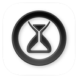

iOS · Android · Game development
OrfeoKaplowcomputer science student, TU Berlin
Mobile development has really stuck with me, and I have already built and released for iOS and Android.
01 — About me
Games first,then everything.
Hi! My name is Orfeo Kaplow, I am a computer science student at TU Berlin. What started as a passion for video games and game dev, slowly turned into curiosity for software development in general. I taught myself web development first, then grew my knowledge in building for mobile, learning Flutter and Swift. Now, mobile development has really stuck with me, and I have already built and released for iOS and Android.
02 — Skills & experience
Where I haveshipped.
Outside of my personal projects, I have gathered real-life development experience here:
03 — My projects
Four apps,built and released.
Chess Journal
- A simple journaling app for over the board chess games, with extra features like puzzles and a chess clock.
Chess Manager
- A comprehensive chess management app with features for tournament organization and player statistics. Built for iOS, iPadOS and MacOS
Reps+
- iOS app for tracking workouts and exercises. Easy to use and packed with features like a muscle heat map and routine planning.

Armadillo
- A free iOS app for blocking and restricting apps or websites on your device. Focused on privacy and user control.
04 — On device
Four apps,one screen.
The handset following you down this page is a three.js model of an iPhone 17 Pro — real millimetres, named parts. It turns four times as you scroll, and each time the glass comes back around it is running a different app: Reps+, Chess Journal, Chess Manager, Armadillo — every screen mapped on pixel for pixel.
Now on the glass — Reps+
05 — Support & contact
Get intouch.
If you have any questions or concerns, please contact me at: